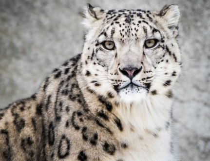

WELCOME TO ZOO
Lets Have a look at some very excited places to visit!!
- The Zoological Garden, Alipore
The Zoological Garden, Alipore (also informally called the Alipore Zoo or Calcutta Zoo) is India's oldest formally stated zoological park (as opposed to royal and British menageries) and a big tourist attraction in Kolkata, West Bengal. It has been open as a zoo since 1876, and covers 18.811 ha (46.48 acres). It is probably best known as the home of the now expired Aldabra giant tortoise Adwaita, who was reputed to have been over 250 years old when he died in 2006. It is also home to one of the few captive breeding projects involving the Manipur brow-antlered deer. One of the most popular tourist attractions in Kolkata, it draws huge crowds during the winter season, especially during December and January. The highest attendance till date was on January 1, 2018 with 110,000 visitors.
History
- Bannerghatta National Park
Bannerghatta National Park is a national park in India, located near Bangalore, Karnataka. It was founded in 1970 and declared as a national park in 1974.[1] In 2002, a small portion of the park became a zoological garden, the Bannerghatta Biological Park.[2]
There are ancient temples in the park for worship and it is a destination for trekking and hiking. Within the national park area are six rural villages enclosed within three large enclosures for sheep and cattle farming.[3] This park offers a wide range of diverse wildlife to the exploradoras. Coming from the finest of Bengaluru, Karnataka, this park offers a guided bus tour all along the 6 km safari roads, which is specially made for safarists and foreign tourist gatherers.
Geography
Let's Look at some Rare Breeds of Animals in India
- Snow Leopard

With long and thick fur, and brown yellowish to smoky grey skin, Snow Leopard is one of the most exotic species found in Himalayan regions of India. One can easily recognize the animal by its attractive long tail. These can be easily spotted at Dibang Wildlife Sanctuary (Arunachal Pradesh), Himalayan National Park (Himachal Pradesh), and Nanda Devi National Park (Uttarakhand).
- Nilgiri Tahr

Having curved horns, a gluey coat and coarse fur, Nilgiri Tahr is an interesting animal found in the western parts of India. Tropical rainforest regions, like Annamalai Hills, Palani Hills and Nilgiri Hills, are the home to this exotic species. Notably, Nilgiri Tahr enjoys the status of state animal in the Indian state of Tamil Nadu.
- Greater One-horned Rhinoceros
Greater One-horned Rhinoceros is a large animal that can be found particularly in Kaziranga National Park (Assam), Dudhwa Tiger Reserve (Uttar Pradesh) and Pobitora Wildlife Sanctuary (Assam). Usually clinging on to the Himalayan foothills, it is one such animal that every wildlife enthusiast would love to watch.
Let's Look at some Rare Breeds of Birds in India
- Whooper Swan
It is also known as Common Swan. It is the Eurasian counterpart of the North American trumpeter swan and belongs to genus Cygnus. It is considered to be amongst the heaviest flying birds.
- Desert Finch
It is also known as Lichtenstein's desert finch. It is mostly spotted in desert areas where water is readily available. However, it can also be found in low mountains and foothills, and in cultivated valleys. It feeds on seeds and insects.
- Mallard Duck
Males and females differ in appearance. Males have a glossy green head and grey wings while females have brown head and wings. It feeds on water plants and small animals. It has a predation-avoidance behaviour and sleeps with one eye open-- allowing one brain hemisphere to remain aware while the other half sleeps.